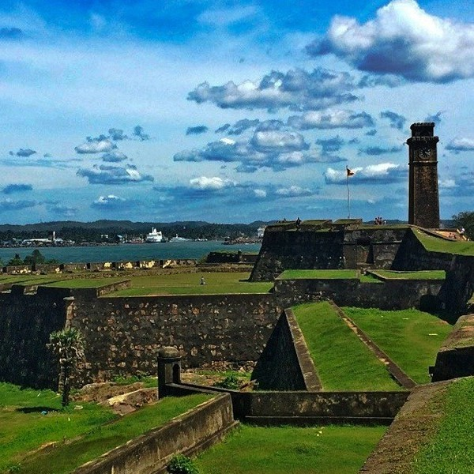
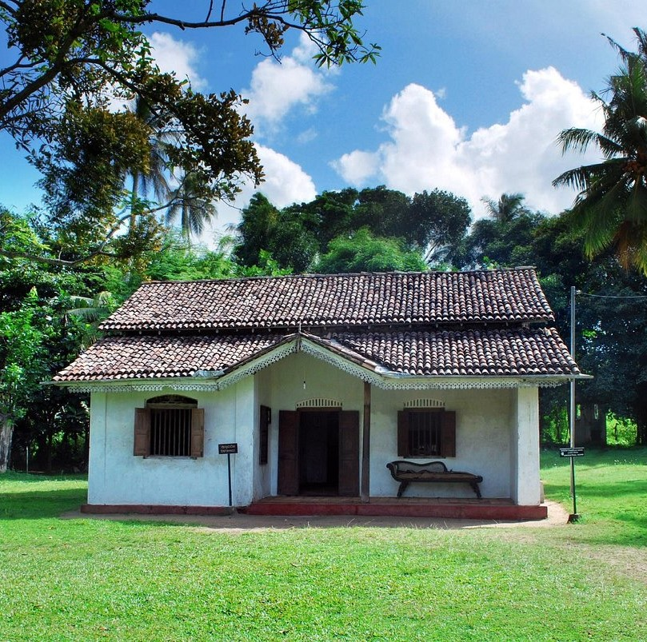

Galle Fort |
Galle Fort, an architectural marvel perched on the southern coast of Sri Lanka, stands as a sentinel of history, resilience, and cultural fusion. Initially conceived by the Portuguese during the 16th century as a strategic outpost in their maritime empire, it later fell under the dominion of the Dutch in the 17th century, who fortified and expanded its defenses to withstand the ravages of time and conflict. The fortifications, meticulously crafted with coral and limestone, have endured centuries of tumult, bearing witness to the ebb and flow of colonial powers and the vibrant tapestry of local life. Within its sturdy walls, Galle Fort harbors a treasure trove of stories and secrets, from the spice trade that once thrived within its confines to the struggles for independence that echoed through its narrow alleys. Today, Galle Fort stands not only as a testament to the ingenuity of its builders but also as a living testament to the resilience of Sri Lanka's cultural heritage. Its cobblestone streets wind through a maze of colonial-era buildings, where Dutch and British architecture seamlessly blend with indigenous influences. As visitors meander through its labyrinthine corridors, they are transported back in time, encountering remnants of a bygone era at every turn. From the iconic Galle Lighthouse that stands sentinel over the Indian Ocean to the majestic Galle Clocktower that marks the passage of time, every structure within the fort tells a story of conquest, trade, and cultural exchange. Yet, amidst the echoes of history, Galle Fort pulsates with life and vitality. Its bustling streets are lined with vibrant cafes, boutique shops, and art galleries, each offering a glimpse into the creative spirit that animates this ancient stronghold. Visitors can sample exotic spices at bustling markets, savor traditional Sri Lankan cuisine at quaint eateries, or simply lose themselves in the enchanting melodies of street musicians that fill the air. As the sun sets over the horizon, casting a golden hue over the fort's weathered ramparts, visitors gather to witness nature's breathtaking spectacle—a reminder of the timeless beauty that transcends the passage of time. Galle Fort is more than a historical relic; it is a living, breathing testament to the enduring spirit of Sri Lanka's cultural heritage. Its walls have withstood the test of time, bearing witness to centuries of triumphs and tribulations. As visitors from around the world flock to its gates, they are greeted not only by the grandeur of its architecture but also by the warmth and hospitality of its people. For within the confines of Galle Fort, past and present converge in a harmonious symphony, weaving together the threads of history, culture, and community into a tapestry of unparalleled beauty and resilience. |
|---|---|
Martin Wickramasinghe Folk Museum |
The Martin Wickramasinghe Folk Museum stands as a testament to the legacy of Sri Lanka's renowned folk author. Located in Koggala, about 30 minutes from Galle, this expansive museum offers visitors a glimpse into Wickramasinghe's life and contributions to Sinhalese literature. Housed within his childhood home, the museum showcases manuscripts, personal belongings, and a chronicle of his remarkable journey. Additionally, visitors can explore exhibits dedicated to Sri Lankan folklore, featuring traditional attire, puppets, masks, and other intriguing artifacts. The manicured garden and sheds surrounding the museum preserve old vehicles and machinery, adding to its allure. A visit to the Martin Wickramasinghe Folk Museum provides an enriching experience, offering insights into both the author's life and the cultural heritage of Sri Lanka. |